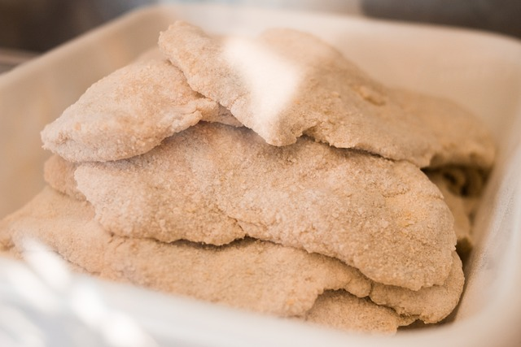

Milanessa

Descripcion
La milanesa es una comida tipica de Argentina y muy facil de hacer.
Ingredientes
- pechuga de pollo fileteada
- pan rayado
- dos huevos
- peregil y ajo picados
- sal a gusto
- mostaza
- leche
Pasos
- colocar en un bold los dos huevos, la mostaza, la leche, el peregil y el ajo picado y revolver bien.
- pasar el filet de pollo por pan rayado para quitar la humedad
- pasar por la mezcla recine preparada
- volver a pasar por pan rayado y listo